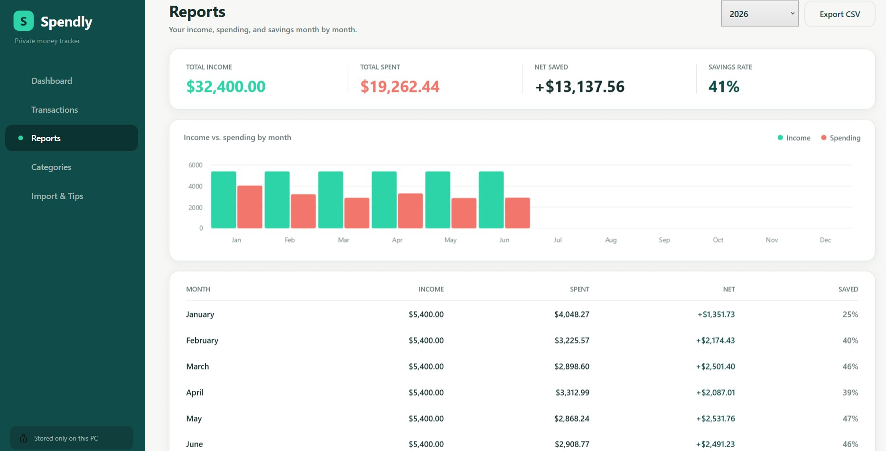
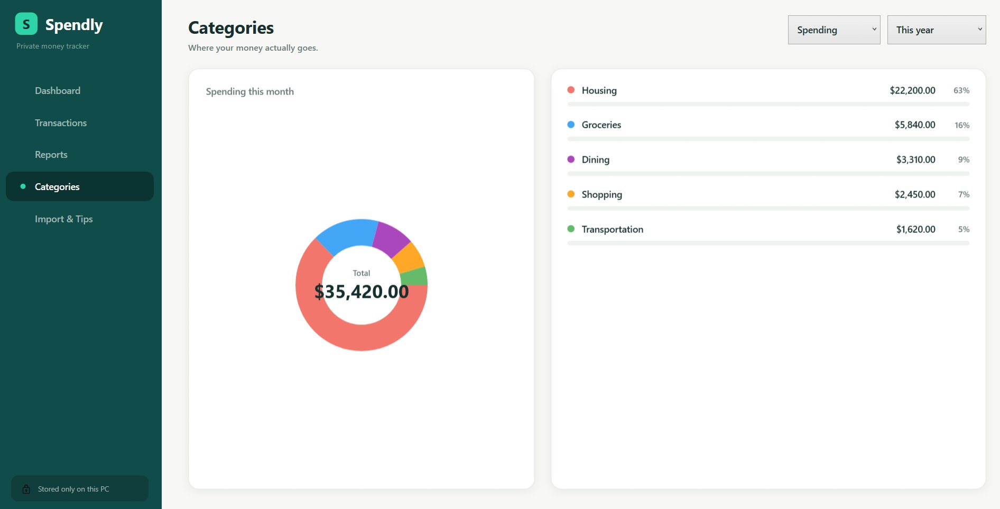
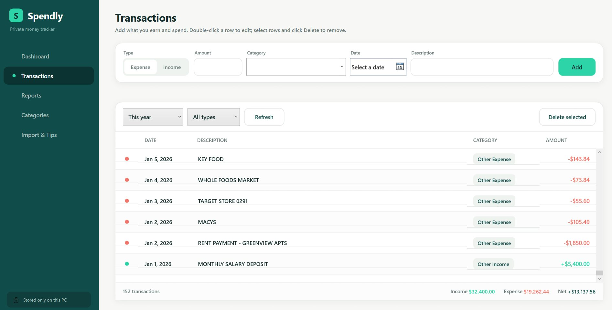
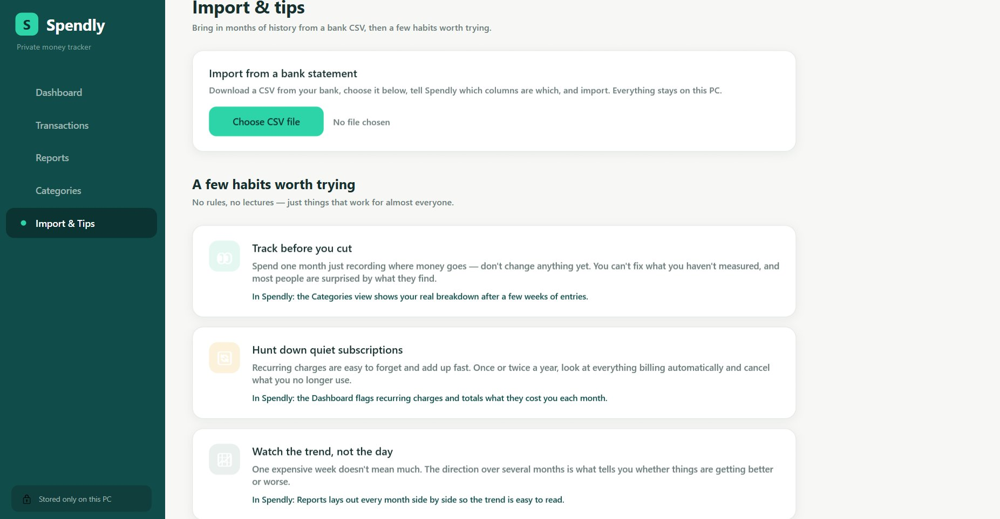

What it does
Every budgeting app seems to want your bank login, a monthly subscription, and your financial data sitting on someone else's servers. Spendly is the opposite. It runs entirely on your computer — no accounts, no cloud, no bank connection — so your money stays your business.
Import months of history from a bank CSV in seconds, then Spendly turns your numbers into a clear dashboard, monthly trends, category breakdowns, and plain-language insights about where your money actually goes. Buy it once and own it.
Features
Completely offline
Your data is stored locally and never leaves your device. There's no server to send it to.
Import bank statements
Bring in months of transactions from a CSV in seconds, with column mapping and duplicate detection.
Insightful dashboard
Income, spending, net, month-over-month trends, and automatic insights at a glance.
Category breakdowns
See exactly where your money goes with a clear donut chart and ranked list.
Monthly & yearly reports
Income vs. spending by month, savings rate, and a CSV export of everything.
Pay once
No subscription, ever. One purchase and it's yours to keep.
A look inside




Good to know
Spendly is a native Windows app for Windows 10 and 11. Everything you track is stored in a local file on your machine — there are no accounts, no cloud sync, and no network connection used for your data. It imports transactions from a bank CSV (most banks offer a CSV or "export transactions" option in your account activity). It's a one-time purchase with no subscription.